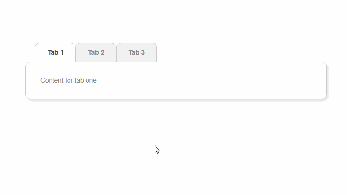
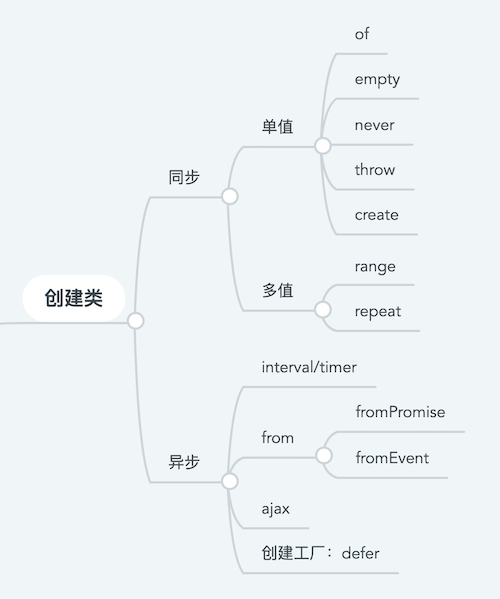
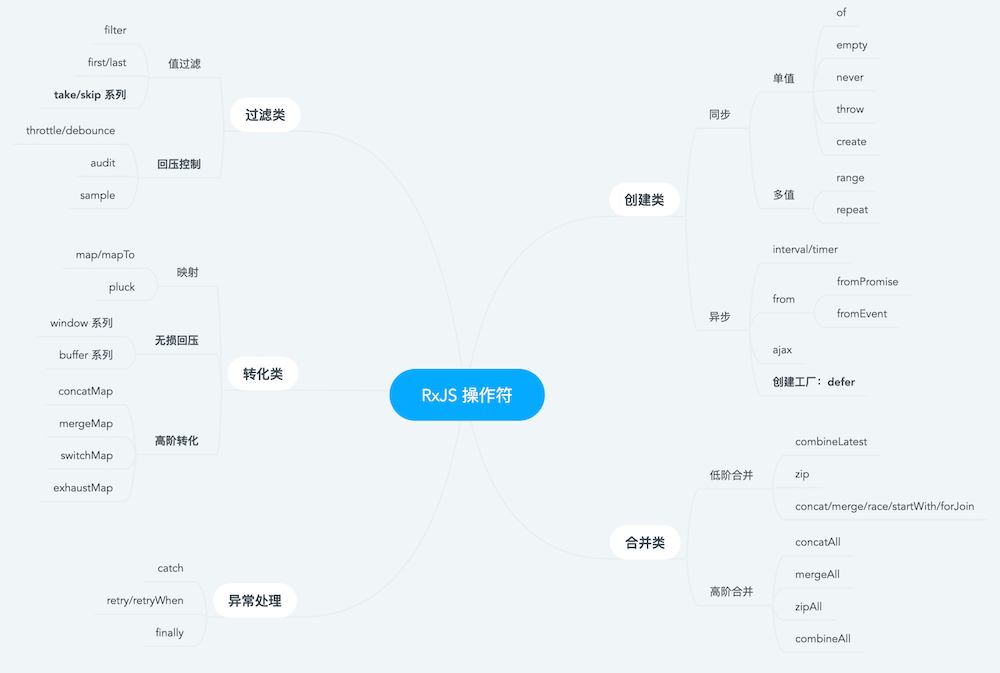
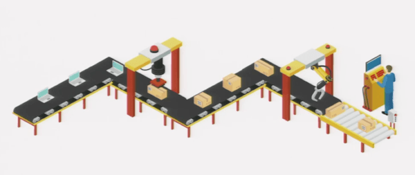

RxJS 光速入门

众所周知，RxJS 的学习曲线十分陡峭。尽管网上已经存在诸多入门科普文章，但当年我作为一个新人，最直接的感受还是：一看文章天花乱坠，一写代码啥也不会。在经历了一个请求重试写了一整天的噩梦后，我决定把我的心路历程记录下来，给在 RxJS 门槛前望之兴叹的同学们一点帮助。
看个例子
我们先看一个前端语境下非常常见的例子（也可能是一个较为常见的面试题，反正我经常问）：
假设页面上有几个垂类 Tab，每次切换都会发送请求更新下发的数据来源。那么如何才能保证用户在快速切换 Tab 时下发数据来源不错乱？

大家的思路一般分为两种：
- 从确保顺序入手：请求携带标识，请求返回后根据标识判断是否渲染；
- 从降低频率入手：切换行为使用 debounce 消抖，尽量确保请求的有序；
我们先不管这两种方法是否能完美工作，先尝试把它们用代码撸一遍：
tabChange = (tabId) => { |
相信对有些追求极致的同学，看到这段代码本身可能就会眉头一皱：它有一些坏味道，但有说不清楚坏在哪里。
如果细细的品味一下，会发现它坏味道体现在以下两点：
- 竞态危害：第二行的
tabId可能跟相隔两行的第 4 行的tabId的值并不相同，这一不确定性对于传统的同步代码一把梭的前端开发来说是非常令人头疼的。这个问题在多线程的语境下被称作“竞态危害（Race Hazard）”，指一段代码的执行结果依赖两个异步逻辑的彼此的执行顺序。 - 为解决上一问题所带来的模式混用：例如回调与 Promise 的混用、全局变量与局部变量的混用。代码如果几经流转，可能就会变成无尽 callback+Promise 地狱。
为什么不试试神奇的 RxJS 呢？代码如下：
const tabSwitch$ = fromEvent(tab, 'click'); |
可以看到，虽然一下子变成了天书，但至少它模式统一、行数减少，非常的 exciting！
怎么解决问题
先翻开这一篇天书，我们来看看 RxJS 是通过什么样的方式来解决模式混用和竞态危害两个问题的？
Observable
这一点其实也是 RxJS 最难理解的一点：它建立了一层高 Level 的抽象，创造了 Observable 的概念。
有的文章在这里会引入“流（stream）”的概念，数据流跟 Observable 还是有一些区别，简单理解来说：流仅仅是随着时间维度而增加值的数组，它是 Observable 生产的数据类型。
而 Observable 本身的概念要复杂的多。它的诞生在 Andre 的这篇文章里有详尽的叙述，和 Promise 类似，是一个由生产者决定消费者何时消费数据的模型。
一个典型的 Observable 如下所示：
const ob$ = Observable.create(observer => { // 生产者 |
这里我们只需要记住 Observable 对象的两个特点：
- 它跟 Promise 很类似，区别在于它可以提供多值传递，因此共有
next、error、complete三种状态； - 它通过
subscribe方法关联生产者与消费者，subscribe像一条生产线的开关，只有它启动了生产者的生产才会开始；
由于各种异步行为本身就是一个在时间维度上生产数据的过程，因此他们都可以通过 RxJS 的创建类操作符转换为 Observable 对象。例如上述代码中的 fromEvent，就是将 tab 的点击事件转换为一个 Observable 对象：
const tabSwitch$ = fromEvent(tab, 'click'); |
RxJS 有大量的创建类操作符，可以把你能想象的所有同步异步事件进行统一转换，例如请求、DOM 事件、websocket 消息、定时器等。

/* 使用创建类操作符对异步事件输入的统一 */ |
有了 Observable 对象，等于说 RxJS 给异步代码提供了统一的范式，那么它是具体怎么解决竞态危害的呢？
操作符
其实上面已经提到了创建类操作符，RxJS 还提供种类繁多的大量操作符，专门用于解决竞态危害：
const tabSwitch$ = fromEvent(tab, 'click'); |
例如上面提到的 switchMap、debounceTime 操作符，就是专门处理高阶 Observable 的顺序问题。

我们在这里先不深入探究每一种操作符的用途，只需要知道操作符是专门对数据流进行处理的工具即可。有了操作符就可以确保这一点：尽管数据在获取时纷繁芜杂，但操作符可以保证我们在处理数据时有条不紊。
如果要用现实中的物体来做比喻，RxJS 就像个传送带：

- 传送带的头部有一个转换器，它能够把输入的各种各样的原料都捏成一个叫做 Observable 的物体；
- 传送带的中段是一条生成线，生产线上有各种各样叫做操作符的机械臂，每个机械臂承担单一而确定的职责：有的机械臂会处理原料、有的会丢弃一些不需要的原料、有的会把原料聚合到一定个数才放到传送带上；
- 传送带的尾部有一个叫做
subscribe的工具人，只有它开动了按钮整条传送带才会运转，杜绝浪费。
TLDR
作为一篇光速入门文章，不能说的太多，我们在这里尝试总结一下：
- RxJS 通过了Observable 和操作符，解决了异步编程的模式统一和时序问题，让你的异步代码规范而简洁；
- 什么场景下应该使用 RxJS？根据上文所述，RxJS 是用于解决竞态危害问题的。如果你的业务场景中有大量的异步行为，而且它们的执行顺序错乱会导致输出的不正确，这时候就应该考虑引入 RxJS 来规范你的代码了。
参考
- What does it mean to be Reactive?，核心思想。虽然口音很重，演讲风格也很浮夸😂
- javascript-getter-setter-pyramid，为什么要有 Observable，编程方式的底层解构。这里是英文原版，可以看这一篇中文解析；
- What are the differences between Promises, Observables, and Streams?
- RxJS - 封裝程式的藝術，有些观点的中文视频讲解；
- RXViz，RxJS 代码图形化工具；